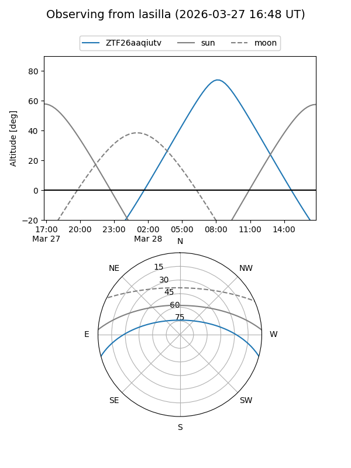
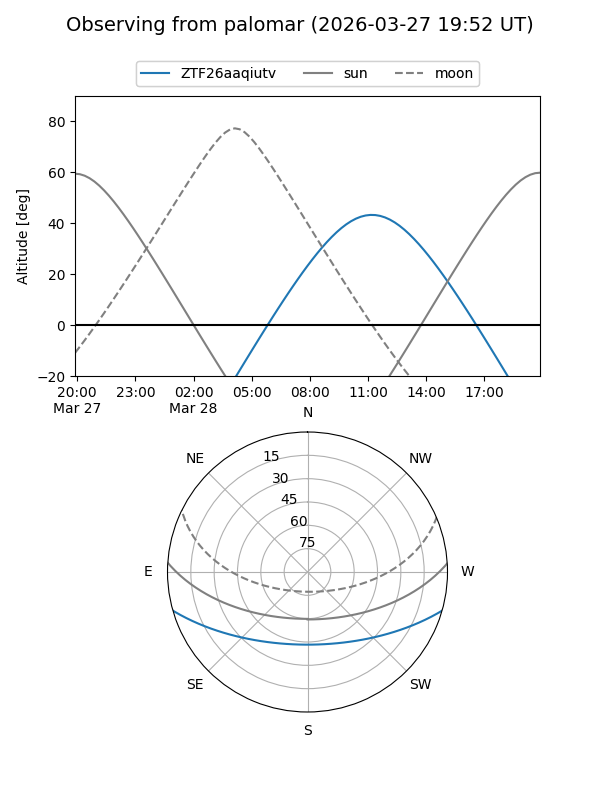

ZTF26aaqiutv
Target ZTF26aaqiutv at 2026-03-27 13:35
Aliases and brokers:
FINK: link
Lasair: link
ALeRCE: link
alt names
ZTF26aaqiutv (ztf,fink_ztf)
Coordinates:
equatorial (ra, dec) = 236.7464,-13.26609
equatorial (HMS+DMS) = 15:46:59.13,-13:15:57.92
galactic (l, b) = (355.0942,+31.31015)
Flags:
Photometry:
last ztfg=17.68
1 ztfg detections
Lightcurve
Visibility


Additional plots